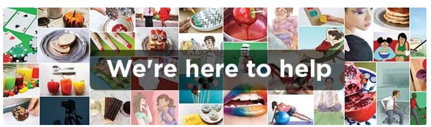

Acerca de wikiHow  ¿Quiénes son los especialistas que revisan los artículos de wikiHow? Adrienne Youdim, MD Brian Bourquin, DVM Arash Fayz Chloe Carmichael, PhD ¿Quiénes son los socios de wikiHow? wikiHow se enorgullece de tener a Amazon como socio wikiHow se enorgullece de tener a Mental Health America como socio. wikiHow se enorgullece de tener a Newsela como socio. wikiHow se ha asociado con Teach For India